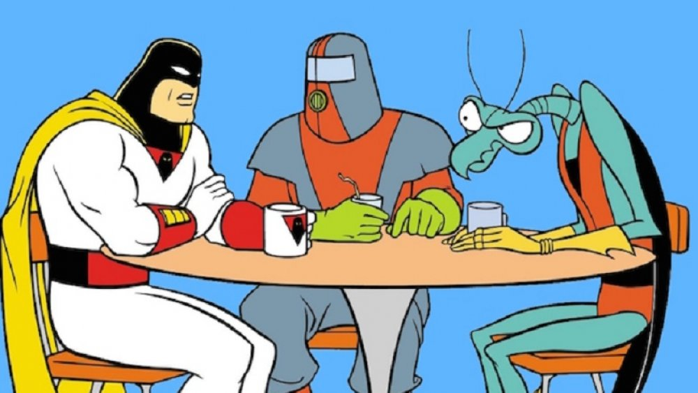

About Space Ghost
Space Ghost is the host of Coast to Coast. He interviews people and deals with Zorak who is in the band, and Moltar, who controls the cameras.
Space Ghost and his crew.
Space Ghost's Characteristics
- He's got ray gun hands.
- He is the host with the most.
- He puts up with Zorak and Moltar.
Space Ghost's Crew Members
Space Ghost's crew is made of villains from his original cartoon show. Click on the links below to read more about them.